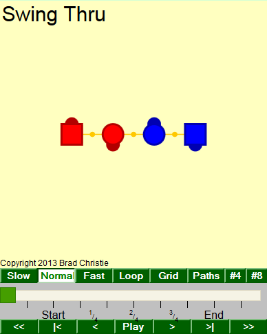

How to use Taminations
This example to the right is just a snapshot image, not a working animation. The square dancers are boys, and the round ones are girls. The orange connections are handholds.
I try to follow the Callerlab definitions as closely as possible. Some differences you might see are:
- The dancers may adjust a bit to finish in standard lines, waves, columns, etc. This is what real dancers do as well.
- I try to match the Callerlab timing with the number of tick marks between Start and End, but you might find a few differences.
- Handholds are drawn very simply and don't show any styling - hands up, couples, forearm, are all shown the same. Some handholds might not start or end exactly when real dancers would.
Tamination Controls and Display
- Square dancers are "boys", circles are "girls". The dark hemisphere show the facing direction. (So this example shows right-handed ocean waves.) Click on a dancer to show a line for its path.
- These orange connectors are handholds. There's no styling - hands up, couples, forearm etc. are all drawn the same.
- Slow Dancers move at a Slow pace.
- Normal Dancers move at a Normal pace.
- Fast Dancers move at a Fast pace.
- Loop Repeats the animation continuously.
- Grid Shows a grid with 1-dancer-size boxes.
- Paths Displays the route dancers take as colored lines. This is the same as clicking on each dancer.
- #4 Numbers couples 1 to 4
- #8 Numbers dancers 1 to 8
- Multi-part calls have the different parts numbered here. The tick marks show the beats. All animations start on the second tic mark.
- << Click to go to the start of the animation.
- |< Click to go to the start of the current part.
- < Click to go backward a small amount.
- Play Click to play or stop animation.
- > Click to go forward a small amount.
- >| Click to go to the start of the next part.
- >> Click to go to the end of the animation.
Special Features
Click on a dancer while holding the Shift key for these extra features.
- Hexagon One dancer is added for every 2 in the starting formation, so 4 couples becomes 6 couples. There's an excellent article on this by Clark Baker, and more info and graphics by Justin Legakis
- Bi-gon This variation removes half the dancers, so 4 couples becomes 2. A great article by Sue Curtis is required reading if you want to attempt to understand this.
- Barstool This fixes the position of one dancer. The barstool dancer can turn but not move. All the other dancers adjust by moving around the barstool. Clark Baker has a good explanation.
- Compass The complement to barstool - one dancer's facing direction is fixed, and the other dancers have to rotate the setup to adjust. I don't know if this has actually been done, it might not be practical especially for 4 couples.
